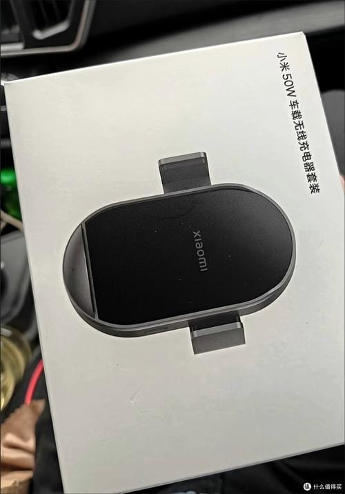

小米 50W 车载无线充电器

小米 50W 车载无线充电器把无线充与手机支架合二为一，红外感应自动开合夹臂，放上即充。对小米机型最高 50W 无线快充，兼容 Qi 协议设备，内置散热风扇与多重安全保护，是米系手机车主的顺手配件。
客观评测
这款车载无线充电器集成了电动夹臂手机支架与 Qi 无线充电：红外感应识别到手机自动张开夹臂，放稳后开始充电，导航支架与充电器合二为一。对支持该功率的小米机型最高约 50W 无线充电，其他 Qi 设备按各自协议功率充电。内置风扇主动散热，实测长时间导航充电的温控优于无风扇产品，异物检测、过温过流保护齐全。安装需占用点烟器接口，走线整洁度取决于车型。夹臂对大尺寸厚壳手机兼容性尚可但不完美。
主观点评
上车把手机往支架一放就开始快充，这个动作顺滑到会上瘾，导航一路下来电量不降反升。夏天暴晒后充电速度会打些折扣，风扇噪音隐约可闻但可接受。它是米系手机车主的最优解之一；换别的品牌手机则只剩普通无线充的价值，买前先确认自己机型的功率。
优点与不足
- 夹臂感应自动开合，单手取放顺畅
- 小米机型无线快充速度接近有线
- 风扇散热减少夏天降速困扰
- 50W 快充仅限部分小米机型，其他品牌功率有限
- 无线充电发热仍高于有线充电
- 需占用点烟器接口并走线
参数规格
| 最大输出 | 最高 50W（部分小米机型，约数） |
|---|---|
| 协议 | Qi 无线充电协议，向下兼容普通 Qi 设备 |
| 感应 | 红外感应自动开合夹臂 |
| 散热 | 内置风扇主动散热 |
| 输入 | 车载点烟器供电（附车充头，约数） |
| 安装 | 出风口/仪表台支架（以包装为准） |
| 安全保护 | 过温、过流、异物检测保护 |
| 兼容 | 支持 Qi 的各品牌手机（功率视机型） |
| 材质 | PC+硅胶防滑夹臂 |
| 附件 | 车充适配器、数据线、支架底座（以包装为准） |